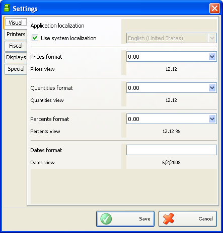
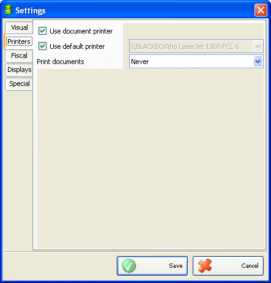
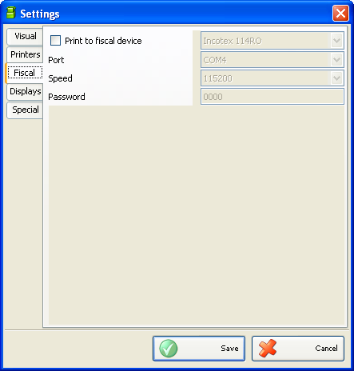

Setari
Puteti folosi
fereastra Setari pentru configurarea aplicatiei in functie de
necesitati (click pe icoana  pentru
deschiderea ferestrei).Informatiile sunt impartite in mai multe category afisate
in partea stanga a ferestrei astfel : Vizualizare, Imprimante, Fiscal, Afisaje,
Speciale. Alegeti categoria dorita a fi modificata si efectuati setarile dorite
dupa care salvati modificarile cu click pe butonul Salvare. Fereastra se va
inchide automat. Click pe butonul Cancel pentru iesire fara salvare modificari.
pentru
deschiderea ferestrei).Informatiile sunt impartite in mai multe category afisate
in partea stanga a ferestrei astfel : Vizualizare, Imprimante, Fiscal, Afisaje,
Speciale. Alegeti categoria dorita a fi modificata si efectuati setarile dorite
dupa care salvati modificarile cu click pe butonul Salvare. Fereastra se va
inchide automat. Click pe butonul Cancel pentru iesire fara salvare modificari.
Fereastra Setari are 5 categorii de setari: Vizual, Imprimante, Fiscal, Afisaje si Speciale.

Setarile visuale determina versiunea de tara, formatele pentru pret, cantitate, procente si formatul datei
Exemplu:
Daca formatul pentru pret este 0,00, pentru un pret de 3 Lei se va vizualiza 3,00. Daca se foloseste o imprimanta fiscala, este important sa se foloseasca acelasi numar de zecimale ca in imprimanta fiscala (usual sunt 0,00 pret; 0,000 cantitate si 0,00 procent).
Daca formatul pentru cantitate este 0,000 �o cantitate de 20,1 se va afisa 21,100.
Daca formatul datei este zz.ll.aaaa, data se va afisa 08.06.2008.

Folositi categoria Setari imprimante pentru a determina cum si unde se vor tipari documentele altele decat cele destinate imprimantei fiscale.
Daca bifati �Utilizare Imprimanta documente�, aplicatia va permite tiparirea bonurilor de stoc, protocoluri, facturi si rapoarte pe o imprimanta conectata la PC direct sau prin retea.
Daca bifati �Utilizati imprimanta implicita� va fi selectata imprimanta setata ca implicita in sistem, altfel trebuie sa alegeti imprimanta unde doriti sa se tipareasca documentele.

Setarile in categoria Fiscal se refera la alegerea imprimantei fiscale sau a casei de marcat folosita ca imprimanta fiscala.
Se va bifa �Tipareste la imprimanta fiscala� pentru tiparirea documentelor specifice (bonuri fiscale si nefiscale, rapoarte fiscale si nefiscale).
In campul Port se va alege portul serial folosit pentru conectarea cu imprimanta fiscala
In campul Speed se va selecta viteza de comunicatie (implicit este 115000) iar in campul Parola se introduce o parola numai daca este cazul. Uzual nu se foloseste parola pentru tiparire pe imprimanta fiscala.
Categoria Afisaje ofera posibilitaeta alegerii afisajului client conectat la imprimanta fiscala.
Trebuie bifat �utilizare afisaj client� pentru afisarea informatiilor referitor la comenzile catre imprimanta fiscala. In campurile Port si Viteza se vor seta portul serial unde este conectata imprimanta fiscala si viteza de comunicatie a imprimantei fiscale.
In categoria setarilor Speciale sunt 4 optiuni de lucru astfel:.
Operare cu cantitati negative determina acceptarea cantitatilor negative in baza de date. Aceasta este utila daca se lucreaza fara actualizare stocuri si exista posibilitatea sa fie produse in stoc chiar daca stocul este zero. Daca nu se bifeaza aceasta optiune, nu se mai pot efectua vanzari ale articolului cu stoc zero.
Arata ecran la pornire determina daca se va afisa ecranul la start-up.
Partener selectabil la POS determina dacacampul Partner va ramane activ dupa salvarea operatiei.
Utilizati pretul cu TVA inclus �determina daca preturile folosite au TVA inclus sau nu.
�2006-2012 Microinvest, All rights reserved